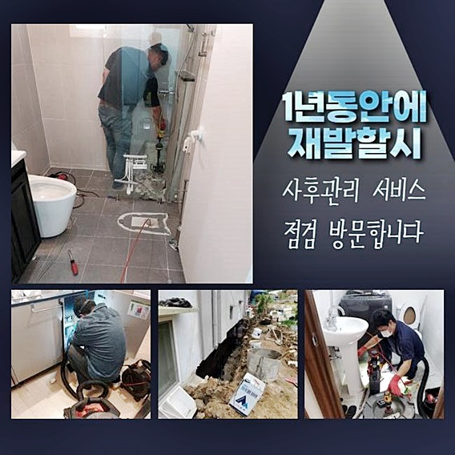
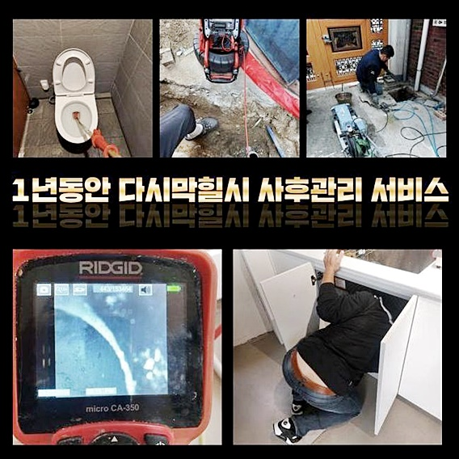
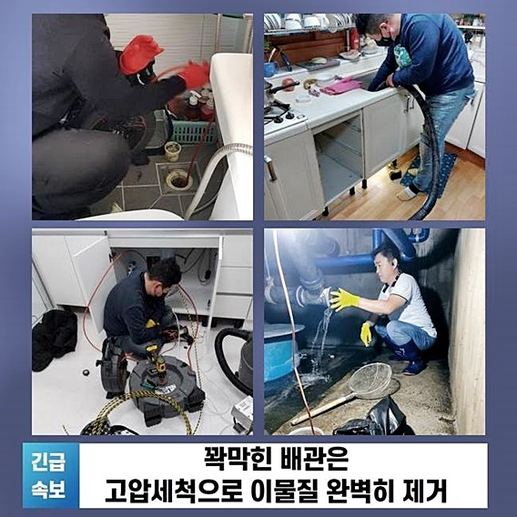
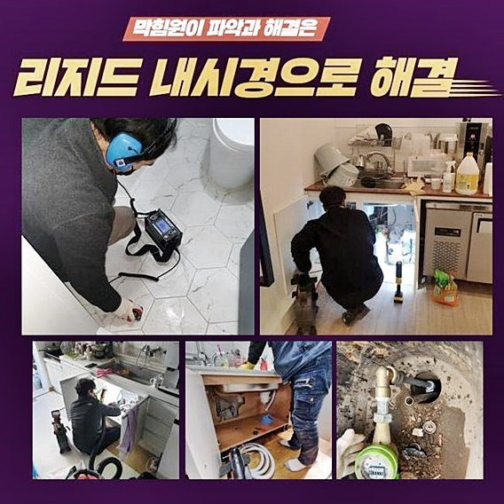
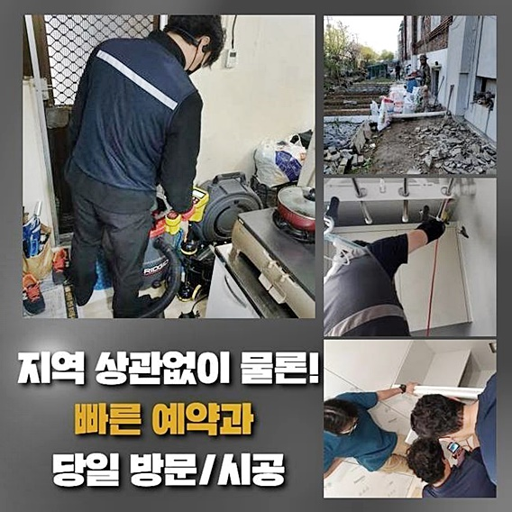
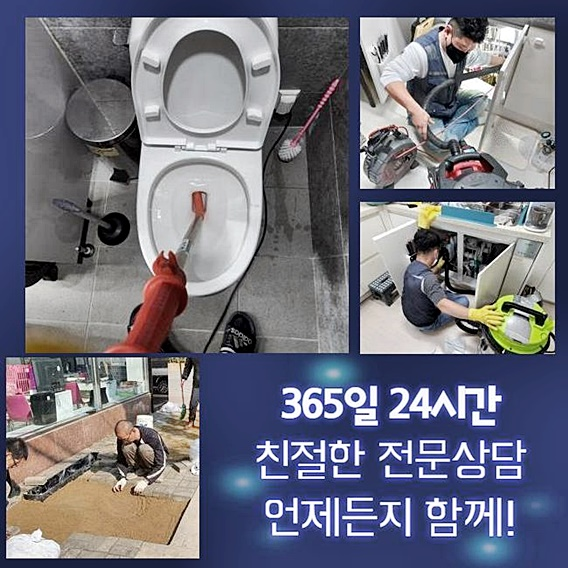
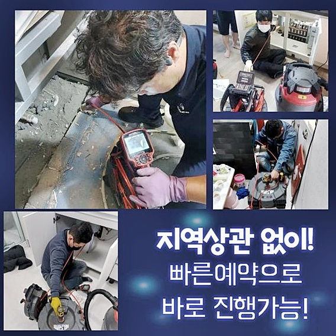

🏠 구로구 가리봉동욕실바닥막힘 항동 하수구청소 배관막힘뚫는업체
용인시 처인구 배관막힘 전문 시공 후기

📋 작업 개요
- 위치: 용인시 처인구, 수원시 영통구, 화성시 동탄
- 서비스 유형: 배관막힘, 하수구청소, 고압세척
- 작업 일시:
- 업체명: 하수구수사대 (010-5615-2118)
🔍 문제 상황
구로구 가리봉동욕실바닥막힘 항동 하수구청소 배관막힘뚫는업체
배관막힘문제로 출동했던 고객의 사례로는 배수상황이 점점 나빠지셨다고 말씀해주셨는데 이런현상은 빠른조치를 취하셔야할 신호에요
혼자서직접 뚫어보는 시도를 해보셨지만 일시적으로만 해결되어 답답함을 느끼신다면 전문가의 지원을받으시는게 좋아요
신속대처를 원하신다면 저희한테 의뢰주시면 신속빠른 해결을해드릴수있죠
음식점이 막혔을때 확실히 뚫어드리고 쾌적한환경으로 유지하도록 도와드릴게요
고객님께서 설명해주신 내용으로 종합적인 판단을거쳐 첫번째로 오수와찌꺼기를 석션기기로 제거한뒤 하수관을 오픈하여 내부상황을 확인해보았죠
배관안쪽을 파악하고자 연결되어있는 주름관들을 해체하고나서 살펴보았어요
내부깊숙히 쌓여버린 기름기와 이물질들을 확실히제거하고 정화작업도 진행했어요
역류증세의 이유였던 막힘문제를 처리하고 정상적인 배수상태로 돌아오게끔 조치했어요
깨끗하게 사용하시도록 유지방법부터 관리방법까지 안내해드렸죠
확실한조치로 문제를타파해 고객님의 만족감을 높일수가 있었답니다
다음현장은 아파트시설 현장이었는데 필요한장비를 챙겨서 문제의장소로 방문드렸어요

🔎 원인 분석
💡 전문가 진단: 정밀 진단 장비를 사용하여 슬러지의 고착 여부를 판명하고 타격/세척 작업을 실시했습니다.
물빠짐상태가 점점 느려졌다고 말씀해주셨고 배관점검도 한두번 시도해보셨지만 확실히 뚫리지않아 곤란함을 느끼셨어요
배수가 막히는현상은 전문가의도움이 필요하다보니 저희업체가 맡게되어 좋게생각해요
저희작업으로 불편한점이 해소되었으면 좋겠습니다
작업후에도 문제가 재차발생시 마음편안히 전화주신다면 빠르게 해결해드리겠습니다
원활하게물이 흘러가지못하고 역류증세까지 발생해서 악취가발생된 긴박한 상황인것이 확인되었고 이런문제로 인하여 고객분께 불편함들을 초래했어요
주방을사용할때 물이빠지지않고 역류까지 발생되는것은 건강상으로봐도 좋지않습니다
그렇다보니 조속한처리가 요구되었어요
다양한현장의 경력이풍부한 전문가들이 직접방문한후 막힌이유를 발견했어요
발생한이유를 확인해보니 배관속슬러지 잔해물들로인해 막히게된걸로 파악할수있었죠
계속해서 강조하는것으로 막힘증세는 빠른대처를 통해서 해결해줘야하는데 막히게되어 악취현상으로 발전된다면 일상을 영위하는데있어 불편함을 야기시킬수있죠
저희들은 고객님들의 하수구시스템을 쾌적하게 바꾸어드리고자 확실한해결로 나타낼것을 약속합니다!
현장마다알맞게 조치를취해 문제를정확히 타파시켜드리도록 하겠습니다!
막힌하수구를 뚫어내고자 최선을다하여 작업하고 혹여나 실패할경우 작업비를 요구하지않아요

🔧 작업 과정
막힘문제에있어 방지법까지 안내드립니다!
고객께서 쾌적환생활을 영위하실수있도록 꼼꼼히 작업에 착수하겠습니다
저희들의경우 배관의 특징에대해 파악하여 방법을찾는 과정을거쳐서 수행하고있습니다
카메라장비를 사용해서 하수구깊은곳을 확인하며 오염도와 구조에대하여 살피고있어요
카메라장비는 오염물질이 어떤형태로 쌓여있는지 자세하게 살필수있게해주고 이를토대로 고객님에게 상태를 설명드립니다
이런과정으로 효율성이있고 정밀한 수리과정을 거치게됩니다
간헐적으로 배관세척을 받아보시는게 좋은방법인데요
배관깊은곳에 각종 오염물들이 퇴적되므로 제거해야만해요
앞서 설명드렸지만 배관cctv를 활용하면 하수구안쪽까지 진찰할수있어요
이뿐만아니라 하수구속 노폐물의 형태도 확인할수가있죠
오염물을 제거하려면 전문장비들이 필요합니다
세척과정시 슬러지이물은 분쇄하기가 까다롭기에 물을활용해서 누그러뜨린뒤 흡입장비로 빨아들여주는게 효율적이에요
이물이누적되서 단단한상태로 굳어버렸다면 샤프트기계를 이용해 해결가능해요
오늘장소는 돌처럼 딱딱해진 슬러지들이 하수구를 막아버린 상태였습니다
이렇다보니 단순한 작업만으로는 대처하기 어려운상태였고 샤프트기계로 분해를해준뒤 고압세척으로 하수구를 작업해보기로 결정했죠
일련의 계획으로 막힘문제가 깔끔히 해결될걸로 예상이됩니다
분해를시작하니 쌓여있었던 석회들이 파쇄되었어요
막힌지점의경우 강도조절을 해가면서 진행해주어야했는데 이를통해서 하수구에파손을 발생시키지않고 분쇄할수있었네요
파쇄가끝나니 이물이조각나서 청소하기 용이했고 이후엔 고압청소로 시도했는데요
수압력이강한 물줄기로쏘아 하수구내의 찌꺼기들을 소거시켰는데 이과정도 매한가지로 하수관손상을 발현시키지않도록 심혈을기울여서 임해야했죠


✅ 작업 완료
배수관작업을 마무리한뒤 가져온 장비들을 챙기고서 철수했습니다
배관문제 방치하지말고 문제를 발견하자마자 조치해보실것을 권유드릴게요
방치하실경우 2차피해로 이어질수있어 신속처리가 필요한것이죠
어떤지역이든 60분내로 도착할수있으며 분명하게 작업계획들을 공개하고있으니 우려하지않으셔도 된답니다
믿고맡기시면 신뢰해주심에 보답할수있게끔 실패없는결과물로 보여드릴게요
이밖으로도 궁금하신게 남으셨다면 아무때나 전화하셔서 물어보신다면 친절히 응대도울게요




⚠️ 하수구 배관 막힘 예방 및 관리 가이드
- ✅ 머리카락, 비닐, 물티슈 등 물에 분해되지 않는 이물질은 절대 흘려보내지 마세요.
- ✅ 기름기 많은 식기는 설거지 전 키친타올로 먼저 기름때를 닦아내세요.
- ✅ 주기적으로 배수구에 뜨거운 물을 가득 부어주어 유지방 고착을 방지하세요.
- ✅ 작업 후 1년 이내 재발 시 무상 A/S 보증 서비스를 제공합니다.
💡 핵심 정리
- 확실한 장비 작업(내시경 점검 및 샤프트 스케일링)으로 원인을 뿌리 뽑습니다.
- 작업 후 1년 이내에 동일한 부위 재발 시 100% 무상 A/S 서비스를 보장합니다.
- 서울 · 경기 · 인천 전 지역에 24시간 언제든 긴급 출동할 수 있도록 항시 대기 중입니다.
❓ 자주 묻는 질문 (FAQ)
🚨 용인시 처인구 배관막힘 문제로 고민이신가요?
정확한 원인 진단과 확실한 시공으로 재발 없는 해결을 약속드립니다.
24시간 긴급 출동 | 서울 · 경기 · 인천 전지역 | 1년 내 재발 시 무상 A/S